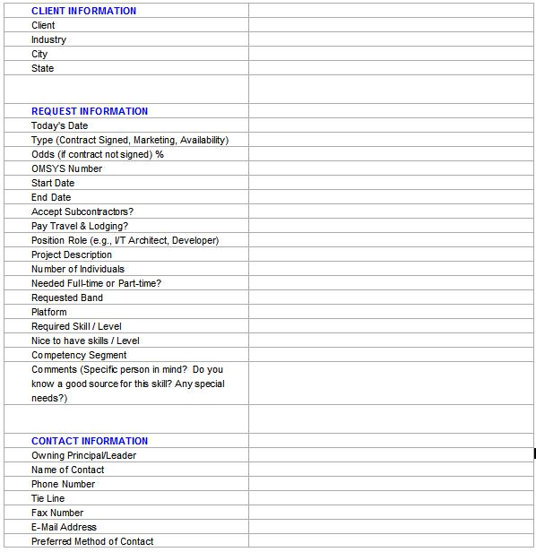

1 Description
This technique paper covers the definition and documentation of the Subcontracting process for a rollout
implementation. Every effort has been made to list the essential activities for a smooth acquisition of a
subcontractor, both internal and external. The main focus is defining the skill requirements and choosing, according to
certain criteria, what the best source is for those requirements and to fulfill them through the subcontracting
processes.
There are two types of subcontracting which may be required, either through internal IBM organizations or external
suppliers. The selection of internal vs. external subcontractors will depend on a variety of factors, and in many cases
will depend on what resources were designated during the solution design phase, and may be restricted by what costing
was used in the GPE (Gross Profit Estimator Pricing tool for ITS).
2 Context
The purpose of this technique paper is to provide decision criteria for subcontracting choices and a clearly defined
process to follow once that decision is made.
-
Skills required for rollout services engagements
Project Management, technical skills – specific to the rollout requirements, installation field force, and
configuration facility personnel
-
Provide the decision criteria for selecting or needing IBM and/or non-IBM resource.
-
-
May be stipulated in the SOW
-
May depend upon the pricing structure in the GPE – what costs were factored in, what quotes are provided,
and from who, management approval may be required for use of external vendor
-
Is the required skill a solution unique skill, i.e., Does IBM even have the skill set readily available, or
is it so specific that we farm it out to vendors as a rule
-
Describe the process for acquiring technical skill from internal IBM organizations and external national suppliers.
3 Steps
3.1 Skills required for Rollouts
The skills required for rollout projects include the performance and coordination of all aspects and activities of the
customer's workstation rollout. The aspects of a workstation rollout consist of:
-
Plan the customization, installation and implementation of the workstation rollout which may include conversion,
testing, and integration
activities
-
Manage and coordinate all facets of hardware and software procurement and licensing registration
activities
-
Management and coordination of hardware and software inventories and warranties, as well as tracking assets
-
Provide reports for authorized personnel
-
Prepare rollout plans and status reports
-
Schedule and coordinate supplier and subcontractor management
-
Asset tracking and reporting
When sourcing subcontractors to supplement or deliver parts of a rollout project there are specific skill sets that
need to be identified and sought from the perform resource. The skills specific to certain roles in the
project may include the following:
Project Management knowledge – specific to rollouts, scheduling, repeatable processes, Tier 1 education or
equivalent experience.
Technical Skills – specific to rollouts
-
Installation Field Force - pc/retail/banking skills – documentation, testing, asset tracking, customer facing
interpersonal skills
-
Configuration Facility personnel – documentation, testing
-
Cabling: RCDD or RCDD/LAN, Knowledge or Certification
-
Hardware: A+ Knowledge or Certification
-
Software: MCSE Knowledge or Certification (Microsoft Windows deployments)
-
Technical Writing: Scripts, Directions, Processes, and Procedures
-
Problem Determination
-
Networking Knowledge: Basic Networking Concepts
3.2 Decision criteria for IBM vs. Non-IBM Resources
Sourcing of resources selection criteria – IBM Internal vs. External
3.2.1 IBM Internal Sourcing
-
As a general rule in ITS, the sourcing of external technical resources has been restricted.
“Outside services, such as consultants, are not to be used. Any exceptions must be reviewed by Mike Wiley, general
manager, and also approved by Robert Delbene, vice president, Finance & Procurement, IBM Global Services.
Internal services, such as IBM consultants, advertising, graphics services, etc. should be minimized. Contractor
usage should be significantly limited and only used for critical business requirements. All services subcontractor
requests, except remotely delivered services (RDS) and technical deployment services (TDS), must be approved
by Meg Kaminski, ITS finance and planning manager. The maintenance, TDS and RDS Resource Request process, which
addresses subcontractor requests, as well as hires/transfers, requires the approval of Scott Dougall, vice
president, technical support executive and Mark McConville, director of finance. Contractors should be used for
billable engagements only after internal resources (ITS, Business Innovation Services and Strategic Outsourcing)
have been considered. As a reminder, the hiring of consultants for non-billable engagements requires ITS general
manager approval prior to any commitment. “(Taken from an e-mail sent by Adrian Barkan, Manager, Business Process
Compliance, ITS Americas – 3/25/2002)
3.2.2 External Sourcing:
-
Stipulated in the SOW – In some cases the basis of the resource selection is due to the signed SOW with the
client. There may be a designated vendor that the client and IBM have agreed to use for their technical
resources. In this case, the selection has already been made and the PM needs to follow what is
stipulated in the signed SOW.
-
Stipulated in the pricing structure – When receiving a signed SOW for delivery, the solution design team has
already structured the delivery of the project using specific resources. If they have included an
external vendor in the solution and the deal they will already have received a quote from the vendor, and used
this costing to price the solution. The same goes for an internal IBM resource. The solution design
team will have already received a quote from the perform organization and will have used this to price the
solution to the customer. In this case, it is likely that the PM will deliver the solution according to
the budgeted model that has been structured.
-
In some cases it may be necessary for the PM to change this model, possibly due to changes in scope, or the
ability of the designated perform group to provide the necessary resources at the time they are needed.
If the PM needs to look for resources elsewhere, the costing model, skill set and structure should be used as
guidelines.
-
Management Discretion – There are restrictions within IBM at present limiting or barring the use of certain
technical resources. If there is a special need, there is a process, documented above, which the PM can
invoke to bypass the restrictions, and source the resources externally if approved.
-
Unique skill set – The required skills may not be available within IBM, could be lacking altogether or may not
be readily available; they may be an OEM product specific skill that IBM does have, or there may be a shortage
of a specific skill which may need to be supplemented externally.
3.3 Sourcing Processes
3.3.1 Internal process
To acquire an internal resource, a request form must be submitted to the Resource Deployment Manager (RDM) of the
perform organization. The completed form should include all the resource requirements and provide the RDM with an
overview of the project.
-
To begin the RDM Process, a Staff Request Form (resource request - see next section for form) is
required.
-
-
The form should be completed by the requestor and sent to the RDM for processing. If the
requester does not have access to Lotus Notes and needs a resource, the information contained in the
Staff Request Form can be given to the RDM over the phone.
-
Providing accurate information and detail on the Staffing Request Form is crucial for the RDM in
locating the right resource for the project. Information contained in the Staffing Request Form
(resource request) is used to build both internal resource requests and external (if indicated on form)
subcontractor requests.
-
Once a Staff Request Form is received by your RDM, the RDM will verify the status of the opportunity
(contract signature, marketing assistance needed by perform resource,...etc).
-
Perform resources will only be assigned to signed contracts. However, a resource can be put on
"hold" for a contract that is not signed for up to one week. If another contract is signed and the
resource on hold is needed for that contract, the RDM will check with the principal that put the resource on
hold. Representative resumes can be provided for contracts/RFP responses that are not signed but these
are representative of the type of resources/skills IBM can provide. This does not guarantee, nor commit a
resource to a project.
-
If a contract is signed, the RDM will review the local bench and/or the National Availability Database for
available resources within the practice. If a resource within the practice is available and the
skills match, the resource will be assigned to the project. If a resume is requested, the RDM will send
resume to requester. If an interview is required and a resource is then selected, the
requestor must contact the RDM to confirm availability of that resource. Be aware that the RDM may
have submitted the candidate on several opportunities. It is not safe to assume the resource is still
available without checking with the RDM.
-
If a resource within the practice is not available or there is no skill match (and the customer is willing to
pay T&L), the RDM will enter the Resource Request in the National Staffing Database. This request
will be sent to all RDM's across the country. Resumes will be sent to the RDM and the requestor of
the resource. The requestor will then review resumes and interview candidates, if a match is found
the requestor must notify their RDM to confirm availability. The RDM requesting the resource will call the
lending RDM and confirm the availability of the selected resource. If available, resource will be
assigned to the project. If there are no resources available nationally with the skill requested and the
customer has agreed that subcontractors can be used, then the RDM will send the resource request form to the
appropriate Vendor RDM to send out to subcontractors/vendors.
-
If the customer will not pay T&L (travel & living) expenses, the RDM will still send the resource
request out nationally to see if there are any local resources from other practices that can handle the
resource request. Resumes will be sent to the RDM and the requestor of the resource.
The requestor will then review resumes and interview candidates, if a match is found the requestor must notify
their RDM to confirm availability. The RDM requesting the resource will call the lending RDM and confirm the
availability of the selected resource. If available, resource will be assigned to the project. If
there are no resources available nationally with the skill requested and the customer has agreed that
subcontractors can be used,, then the RDM will send the resource request form to the appropriate Vendor RDM to
send out to subcontractors/vendors.
-
When an RDM deploys a resource to a project in another IBM Division or department, the requesting RDM will
start a Document of Understanding (DOU) request and send completed DOU to lending RDM to approve. The
lending RDM will have the DOU reviewed by the perform resource and/or principal for agreement. Their must
be an agreement before the perform resource can start the project.
-
Resource Requests are closed in the Staffing Request Database when a resource is assigned, a vendor is
assigned, or there are no resources that match the skill requested.
3.3.2. External process – ReqCat – skill form to fill out
The method of procuring Technical Subcontracting Services involves a combination of Req/Cat Web and the Skills Matching
Application (SMA). The Skills Matching Application was designed to standardize the Resource Request Form (RRF) and to
provide direct communication with our Core Suppliers using the Internet.
From Req/Cat Web you will access SMA where you will submit your requirements for qualified candidates. These
requirements will be distributed to IBMs national venders via the internet. Even if you already have a candidate in
mind, you must submit a request to the supplier as describe here. Suppliers will respond to your requirements by
submitting qualified candidates to SMA (via the internet). You will then review this information and select make a
selection. When you have made your selection, you will submit your choice back to Req/Cat Web. You will then complete,
and submit your requisition after providing accounting information. After the requisition completes the approval
process, a purchase order will be issued.
NOTE: Technical subcontracting requisitions are a two step process.
If you are a first time user of the Skills Matching Application (SMA) - You will need to create a profile for the SMA
application. To ensure that you receive an email notifying you that a supplier has responded, be sure to enter your
email address in your SMA profile.
Initiating a request for a candidate
-
In order to access the SMA, you will first need to log onto Req/Cat Web (RCW).
-
Create requisitions
-
New...(No need to change requester or to external at this time unless you will be using submit type 3..Non-National
supplier or Non-matrix pricing)
-
Shop for items
-
Browse a specific catalog
-
Choose the Skills Matching Tool catalog
-
Click the Skills Matching button
-
You are now being transferred to the SMA web site (DO NOT bookmark this site..you must access the SMA through RCW)
-
Enter your SMA request
-
Record the SMA request number. This is the number that the supplier will use to identify your request.
-
After submitting your request to the supplier, you must now wait until the supplier responds before you can proceed
to the next step. This is only true if you are not using submit type 3..Non-National supplier or Non-matrix
pricing.
-
You will receive an email notifying you that a supplier has responded. (You will only receive emails if your email
address is in your SMA profile)
NOTE - It takes 2-6 hours for your request to get through the intranet firewall and reach the supplier. The same is
true for the response from the supplier.
Receiving a response from supplier/selecting candidate/completing the process
-
Open RCW
-
Create requisitions
-
New...(If your requisition will be external(resale) or if you need to change the requester, you must do so now)
-
Shop for items
-
Browse a specific catalog
-
Choose the Skills Matching Tool catalog
-
Click the Skills Matching button
-
You are now being transferred to the SMA web site (DO NOT bookmark this site..you must access the SMA through RCW)
-
Click Create New/View Pending Requests
-
Click the Pending Request tab
-
Open your SMA request number
-
IMPORTANT - Do not click the "Return To Requisition" button. Just wait. You will automatically be returned to a
Req/Cat Web requisition with 3 line items (straight time, OT and expenses) added.
-
You now have begun a RCW requisition. You have 3 line items in your req. SAVE AS A DRAFT.
-
Update your expense line item if necessary
-
Proceed to Accounting and complete the financial work sheet until your accounting validates.
-
Submit your requisition for approvals so that a purchase order number may be issued.
4 Tools
See steps above
5 Examples
Internal ITS Staffing Request Form
Please fill out Staffing Request form and send to your RDM.
Staffing Request
NOTE: THIS SHOULD BE USED AS A FIRST PASS TO GATHER MORE INFORMATION ABOUT A PARTICULAR STAFFING REQUEST.
ONCE YOU RECEIVE THIS INFORMATION BACK FROM THE REQUESTOR, PLEASE THEN INPUT INTO THE NATIONAL STAFFING REQUEST AND
THEN DISTRIBUTE FROM THE DATABASE!
Please take a moment to complete the following staffing request and resend it back to me so I can distribute the
request for fill your resource needs.

|